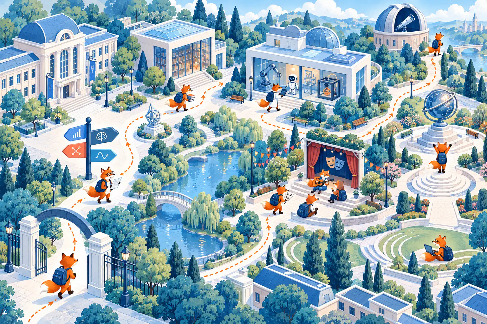
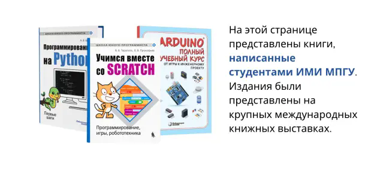

Образование и EdTech
Учитель, методист, тьютор, разработчик образовательных продуктов и цифровых курсов.
Институт математики и информатики МПГУ
Направление обучения – это не одна профессия и не один скучный сценарий, ты сам можешь создать свой уникальный профиль специалиста. Выбирай станции, знакомься с направлениями и собирай собственную комбинацию: математика, технологии, педагогика, наука, медиа и студенческие проекты.
Пора в путь.
Семь точек — от знакомства с институтом до приключений!

Собери себя сам
«Педагогическое образование» не означает «только учитель»
Педагогическая подготовка учит объяснять сложное, проектировать обучение, работать с людьми и данными. В сочетании с математикой, программированием и выбранными активностями она открывает гораздо более широкий спектр ролей.
Учитель, методист, тьютор, разработчик образовательных продуктов и цифровых курсов.
Аналитик данных, исследователь, специалист по статистике и образовательной аналитике. Особенно актуально для Математики.
Разработчик, специалист по ИИ, робототехнике, 3D-моделированию и цифровым лабораториям.
Медиапедагог, автор научпопа, контент-разработчик, организатор мероприятий и команд.
Финальная станция
Познакомься с героями-первокурсниками и посмотри на студенческую жизнь изнутри. Новелла открывается прямо на странице; если браузер ограничит встроенный режим, её можно запустить в новой вкладке.
Открыть отдельноНе нужно выбирать себя раз и навсегда
Пробуй факультативы, клубы, лаборатории, конкурсы и роли в студенческих проектах. Так направление подготовки превращается в личную профессиональную траекторию.
Нажимай на станции в любом порядке. Внутри — короткая справка, идеи для развития и ссылки на программы обучения. После посещения метка получит галочку, а счётчик вверху обновится.
ИМИ вырос из Математического факультета, основанного в 1900 году. Здесь работают учёные, авторы школьных и вузовских учебников и преподаватели-практики.
Среди выпускников — исследователи, преподаватели вузов, директора школ, специалисты сферы образования и технологий. Институт сотрудничает с зарубежными университетами и соединяет фундаментальную подготовку с проектной работой.
Открой карточку программы на портале МПГУ и посмотри свой учебный план. Название профиля задаёт основу, а факультативы, практика и проекты помогают сделать её своей. Еще можно записаться на допы!
Здесь можно заниматься 3D-моделированием, микроэлектроникой и робототехникой, участвовать в разработке проектов и осваивать технологии руками, а не только по конспекту.
Если хочешь к нам, обратись в педагогический кружок или к Павлову Дмитрию Игоревичу или Салахова Алёне Антоновне из кафедры ТМОМИ.
Педагогические клубы развивают профессиональные компетенции через практику и мастер-классы. Творческие объединения позволяют попробовать себя в КВН, студенческом театре и других культурных проектах.
В университете работает киберспортивный и аниме клубы. В институте есть даже клуб японского языка! А еще мы приглашаем тебя участвовать в олимпиадах и конкурсах или даже написать свою книгу.

Студенты могут участвовать в олимпиадах по программированию, научных сессиях, семинарах, ежегодной «Научной весне», педагогических и проектных конкурсах. Уже сейчас ты можешь:
Расскажи о МПГУ в своей школе и помоги старшеклассникам познакомиться с университетом. Можно провести квест-игру «МПГУ», экскурсию «Один день в МПГУ», квиз-игру «Новые знания с новым предметом» или встречу «7 шагов к профессии мечты».
Студсовет помогает первокурсникам ориентироваться в новостях, мероприятиях и повседневной жизни института. Здесь можно спросить совета у старших товарищей, предложить инициативу или присоединиться к организации событий.
Это площадка общения студентов разных курсов — и хороший способ быстрее почувствовать себя частью института.
Визуальная новелла показывает первые дни в институте через историю героев и их выборы. Она встроена ниже — можно начать прямо сейчас.